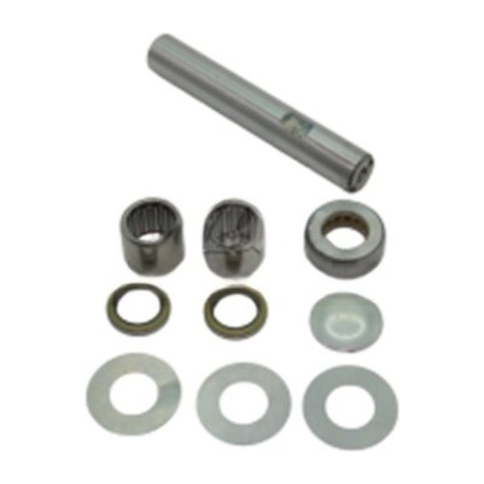

Available
Email for a quote
Komatsu NCTI0N 3EB-24-05141 / STEERING / SYNCHR0NIZER / FUNCTI0N
| OEM part number | NCTI0N |
| Fits | Komatsu |
| Category | Steering |
| Type | Aftermarket replacement |
Send us the quantity you need and we'll reply with pricing, usually within 24 hours. Not the exact part? We can source it. Send the part number or a photo.